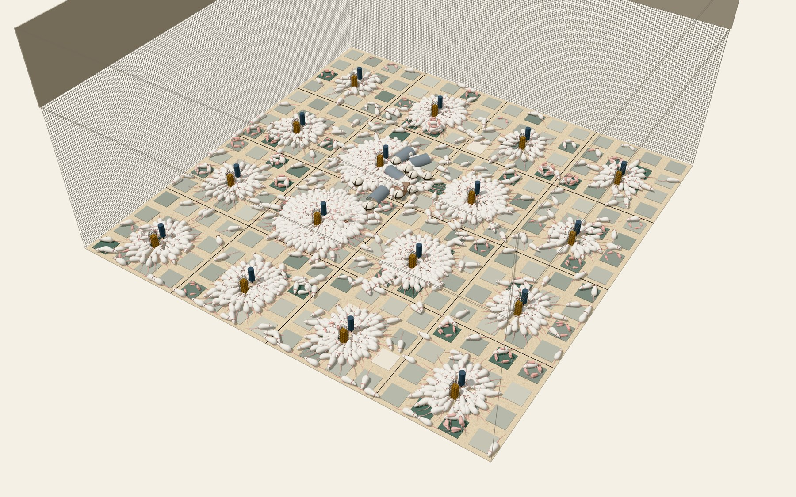
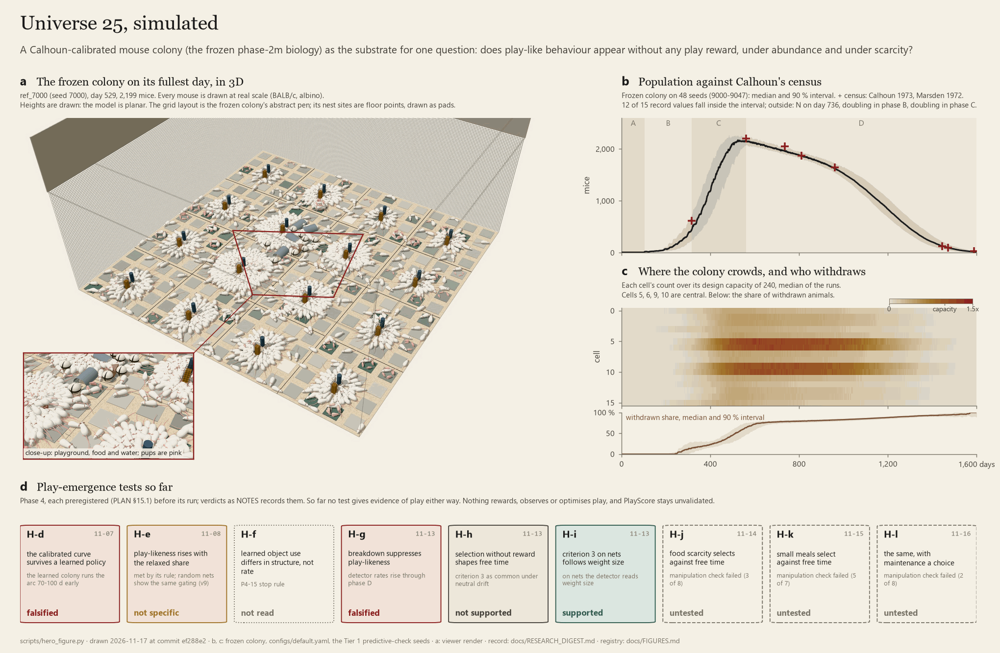

<meta charset="utf-8">
<title>Universe 25 Booklet</title>
<link rel="stylesheet" href="https://fonts.googleapis.com/css2?family=IBM+Plex+Mono:wght@400;600&family=IBM+Plex+Sans:wght@400;600&family=Source+Serif+4:opsz,wght@8..60,400;8..60,600&display=swap">
<style>
:root {
  /* one A4 sheet per page on screen and in print; tokens from HANDOFF 8 (viewer/viewer.css) */
  --paper: #F4F0E6; --sheet: #FBF8F1; --rule: #DDD5C4; --ink: #1A1A1A; --ink-2: #46423B;
  --ink-3: #7B7569; --stress: #8B1E1E; --nest: #2F5D50; --ochre: #A2742A; --tint: #EEE8DB;
  --serif: "Source Serif 4", Georgia, serif; --sans: "IBM Plex Sans", "Segoe UI", sans-serif;
  --mono: "IBM Plex Mono", Consolas, monospace;
}
@media (prefers-color-scheme: dark) {
  :root:not([data-theme="light"]) {
    --paper: #141413; --sheet: #1C1B19; --rule: #3A3732; --ink: #ECE6D8; --ink-2: #BDB6A6;
    --ink-3: #8D8678; --stress: #D0675C; --nest: #7FB09D; --ochre: #CB9B48; --tint: #26241F;
    color-scheme: dark;
  }
}
:root[data-theme="dark"] {
  --paper: #141413; --sheet: #1C1B19; --rule: #3A3732; --ink: #ECE6D8; --ink-2: #BDB6A6;
  --ink-3: #8D8678; --stress: #D0675C; --nest: #7FB09D; --ochre: #CB9B48; --tint: #26241F;
  color-scheme: dark;
}
*, *::before, *::after { box-sizing: border-box; }
html, body { margin: 0; }
body { background: var(--paper); color: var(--ink); font: 10.5pt/1.5 var(--sans); }
.sheets { display: flex; flex-direction: column; align-items: center; gap: 24px;
  padding-block: 24px; padding-left: max(16px, env(safe-area-inset-left, 0px));
  padding-right: max(16px, env(safe-area-inset-right, 0px)); }
.page { width: 210mm; max-width: 100%; min-height: 297mm; background: var(--sheet);
  border: 1px solid var(--rule); padding: 17mm 17mm 14mm; display: flex; flex-direction: column;
  gap: 4mm; position: relative; }
.folio { margin-top: auto; display: flex; justify-content: space-between; font: 8pt var(--mono);
  color: var(--ink-3); border-top: 1px solid var(--rule); padding-top: 2.5mm; }
h1, h2, h3 { font-family: var(--serif); font-weight: 600; text-wrap: balance; margin: 0; }
h1 { font-size: 34pt; line-height: 1.05; letter-spacing: -0.01em; }
h2 { font-size: 19pt; line-height: 1.15; }
h3 { font-size: 11.5pt; margin-top: 1mm; }
p { margin: 0; max-width: 68ch; }
.kicker { font: 600 8pt var(--mono); letter-spacing: 0.12em; text-transform: uppercase;
  color: var(--ink-3); }
.lede { font: 13pt/1.45 var(--serif); color: var(--ink-2); max-width: 60ch; }
.mono, .n { font-family: var(--mono); font-variant-numeric: tabular-nums; }
figure { margin: 0; display: flex; flex-direction: column; gap: 2mm; }
figure img { width: 100%; height: auto; border: 1px solid var(--rule); display: block; }
figcaption { font-size: 8.5pt; color: var(--ink-3); max-width: none; }
.cols { display: grid; grid-template-columns: 1fr 1fr; gap: 5mm 8mm; }
.cols > * { min-width: 0; }
ul { margin: 0; padding-left: 1.1em; display: flex; flex-direction: column; gap: 1.2mm; }
.facts { display: grid; grid-template-columns: repeat(4, 1fr); gap: 3mm; }
.fact { border-top: 2px solid var(--ink); padding-top: 2mm; }
.fact b { display: block; font: 600 17pt/1.1 var(--serif); }
.fact span { font-size: 8.5pt; color: var(--ink-2); }
.phases { display: grid; grid-template-columns: repeat(4, 1fr); border: 1px solid var(--rule); }
.phases div { padding: 2mm 2.5mm; font-size: 8.5pt; border-right: 1px solid var(--rule);
min-width: 0; }
.phases div:last-child { border-right: 0; }
.phases b { font-family: var(--mono); display: block; }
.box { background: var(--tint); padding: 4mm 5mm; display: flex; flex-direction: column; gap: 2mm; }
.box.warn { border-left: 3px solid var(--stress); }
.tablewrap { overflow-x: auto; }
table { border-collapse: collapse; width: 100%; font-size: 8.8pt; }
th { text-align: left; font: 600 7.5pt var(--mono); letter-spacing: 0.06em; text-transform:
uppercase;
  color: var(--ink-3); border-bottom: 1px solid var(--ink-3); padding: 1.2mm 2mm; }
td { border-bottom: 1px solid var(--rule); padding: 1.3mm 2mm; vertical-align: top; }
td.n { text-align: right; white-space: nowrap; }
td.id { font: 600 9pt var(--mono); white-space: nowrap; }
.out { color: var(--stress); font-weight: 600; }
.cmp td { font-size: 8.4pt; }
.cmp td:first-child { font-weight: 600; white-space: nowrap; }
.note { color: var(--ink-3); font-size: 8pt; }
.verdict { font: 600 8pt var(--mono); white-space: nowrap; padding: 0.5mm 1.5mm; border: 1px
solid; }
.v-false { color: var(--stress); } .v-no { color: var(--ink-2); } .v-yes { color: var(--nest); }
.v-spec { color: var(--ochre); } .v-open { color: var(--ink-3); border-style: dashed; }
.cover h1 { margin-top: 6mm; }
.cover .stamp { font: 8.5pt var(--mono); color: var(--ink-3); }
code { font: 8.5pt var(--mono); background: var(--tint); padding: 0.3mm 1mm; }
pre { font: 8.3pt/1.45 var(--mono); background: var(--tint); padding: 3mm 4mm; margin: 0;
  overflow-x: auto; white-space: pre; }
@media screen and (max-width: 800px) {
  .page { width: 100%; min-height: 0; padding: 22px 18px 16px; }
  .cols, .facts { grid-template-columns: 1fr 1fr; }
  h1 { font-size: 28pt; }
}
@media screen and (max-width: 480px) { .cols { grid-template-columns: 1fr; } }
@media print {
  @page { size: A4; margin: 0; }
  :root, :root[data-theme="dark"] { --paper: #FFFFFF; --sheet: #FBF8F1; --rule: #DDD5C4;
    --ink: #1A1A1A; --ink-2: #46423B; --ink-3: #7B7569; --stress: #8B1E1E; --nest: #2F5D50;
    --ochre: #A2742A; --tint: #EEE8DB; color-scheme: light; }
  body { -webkit-print-color-adjust: exact; print-color-adjust: exact; }
  .sheets { padding: 0; gap: 0; display: block; }
  .page { width: 210mm; height: 296.5mm; min-height: 0; border: 0; overflow: hidden;
    break-after: page; margin: 0; }
  .page:last-child { break-after: auto; }
}
</style>
<!-- built by scripts/booklet.py from docs/figures/hero.json and phase4_ledger.yaml; edit the script, not this file -->
<main class="sheets"><section class="page cover" id="p1">
<div class="kicker">universe25-play · a research booklet</div>
<h1>Universe 25, simulated</h1>
<p class="lede">A mouse colony rebuilt from Calhoun's record, calibrated to it, and used to ask one
question: does play-like behaviour appear without any play reward, under abundance and under
scarcity?</p>
<figure>
<figcaption>The simulated colony on its fullest day: ref_7000, seed 7000, day
529, 2,199 mice. Every mouse is drawn at real scale, as an albino mouse. Heights
are drawn; the model is planar.</figcaption></figure>
<div class="cols">
<div><h3>What this is</h3><p>A research simulator of John B. Calhoun's Universe 25, the
mouse colony that grew to 2,200 animals and then died out, and a testbed for questions about
play.</p></div>
<div><h3>What this is not</h3><p>Not a copy of Calhoun's apparatus (page 6), and not a claim
that play emerged. No reward, observation or objective names play anywhere. The play detectors
are used only to evaluate runs, and their composite score is unvalidated.</p></div>
</div>
<p class="stamp">Edition 2026-11-17 · figures drawn at commit 32a97b9</p><div class="folio"><span>Universe 25, simulated</span><span>1 / 9</span></div></section><section class="page " id="p2">
<div class="kicker">The record</div>
<h2>Universe 25, 1968–1973</h2>
<p class="lede">On 9 July 1968, John B. Calhoun put four pairs of BALB/c mice into a pen built so
that nothing but space could run short.</p>
<div class="facts">
<div class="fact"><b>101 × 101 in</b><span>pen, walls 54 in, 16 cells</span></div>
<div class="fact"><b>256</b><span>nest boxes, 15 mice each: 3,840 places</span></div>
<div class="fact"><b>2,200</b><span>mice at the peak, near day 560</span></div>
<div class="fact"><b>27</b><span>left on day 1,588; the last conception near day 920</span></div>
</div>
<h3>Calhoun's four phases</h3>
<div class="phases">
<div><b>A</b>to day 104: settling in</div>
<div><b>B</b>to day 315: growth, doubling every 55 days</div>
<div><b>C</b>to day 560: crowding, doubling slows to 145 days</div>
<div><b>D</b>after day 560: no surviving young after day 600, then decline to near extinction</div>
</div>
<div class="cols">
<div><h3>What Calhoun described</h3><ul>
<li>Mothers that neglected, wounded or abandoned their young.</li>
<li>Males that fought, and males that gave up.</li>
<li>The "beautiful ones": animals that groomed, ate and slept, and never fought, courted or
nested.</li>
<li>A "behavioral sink" where animals packed together at the food.</li></ul></div>
<div><h3>What to keep in mind</h3><ul>
<li>The collapse was seen once, in one colony, and reported by its author in two partly
inconsistent papers.</li>
<li>No independent study has repeated it. The nearest attempts levelled off or recovered.</li>
<li>Inbred founders, unsterilised bedding, a mid-run rebuild and about 150 animals removed are
all confounds.</li></ul></div>
</div>
<div class="box warn"><p>The final extinction date, often quoted, is Calhoun's projection; the
last count he reported was 27 mice on day 1,588.</p></div><div class="folio"><span>Universe 25, simulated</span><span>2 / 9</span></div></section><section class="page " id="p3">
<div class="kicker">The model</div>
<h2>A colony that has to fail for its own reasons</h2>
<p class="lede">Each mouse is an agent driven by needs. Nothing in the code names a collapse day:
the decline has to come out of the mechanisms.</p>
<div class="cols">
<div><h3>The mice</h3><ul>
<li>Drives: hunger, thirst, fatigue, stress, social contact, aggression, maternal care,
curiosity, boredom.</li>
<li>Roles: pup, juvenile, territorial male, subordinate male, breeding female, nursing mother,
withdrawn.</li>
<li>Crowding raises stress and disturbs nursing; young raised in a breaking colony lose
competence for life, and the withdrawn role is the model's analogue of the beautiful
ones.</li>
<li>A body weight on the BALB/cJ growth curve, moved by condition, pregnancy and age, and a coat
genotype at three loci. The record's BALB/c founders make every coat albino.</li></ul></div>
<div><h3>The pen</h3><ul>
<li>Calhoun's 101 × 101 in pen and capacities, laid out simply: 16 square cells, 256 boxes on
the floor, food and water at one point in every cell.</li>
<li>A playground in the centre, with balls, tunnels and ramps that roll and move. Using it
earns nothing.</li>
<li>Deterministic: one seed gives one run, bit for bit, on the CPU.</li></ul></div>
</div>
<h3>How it was fitted</h3>
<p>The parameters were calibrated against Calhoun's landmarks in a series of phases and frozen at
phase 2m. A second build in Calhoun's own triangular pen (replica v2) ended on 2026-11-13 without
beating it; the frozen colony stays the reference.</p>
<div class="box"><p><b>Irreversibility is an assumption.</b> In the model, young who grow up in
a broken colony never recover, as Marsden's transfers from Universe 25 suggest. Other rodent
populations recovered when thinned or moved, so a colony that stays collapsed matches Universe 25,
not crowded rodents in general.</p></div><div class="folio"><span>Universe 25, simulated</span><span>3 / 9</span></div></section><section class="page " id="p4">
<div class="kicker">The research on one page</div>
<h2>The hero figure</h2>
<figure>
<figcaption>a: the colony on its fullest day. b: population on 48
seeds against Calhoun's census. c: crowding by cell and the share of withdrawn animals. d: the
play tests of phase 4. Drawn by scripts/hero_figure.py; docs/FIGURES.md says what each panel does
not claim.</figcaption></figure>
<p>Panel b is the calibration claim: a fit to Calhoun's landmarks, checked on 48 seeds it
was never fitted on. Panel d is the play question so far, test by test.</p><div class="folio"><span>Universe 25, simulated</span><span>4 / 9</span></div></section><section class="page " id="p5">
<div class="kicker">Does the model match the record?</div>
<h2>12 of 15 record values inside the 90 % interval</h2>
<p class="lede">The frozen colony was run on seeds 9000–9047, chosen
before the check. A record value counts as inside when it falls between the 5th and the 95th
percentile of the runs.</p>
<div class="tablewrap"><table>
<thead><tr><th>landmark</th><th>Calhoun</th><th>model median</th><th>90 %
interval</th><th></th></tr></thead>
<tbody><tr><td>first litters</td><td class="n">104</td><td class="n">102</td><td class="n">102 – 105</td><td>inside</td></tr>
<tr><td>mice on day 315</td><td class="n">620</td><td class="n">434</td><td class="n">238 – 721</td><td>inside</td></tr>
<tr><td>peak</td><td class="n">2,200</td><td class="n">2,248</td><td class="n">2,173 – 2,314</td><td>inside</td></tr>
<tr><td>day of the peak</td><td class="n">560</td><td class="n">543</td><td class="n">490 – 603</td><td>inside</td></tr>
<tr><td>last surviving young</td><td class="n">600</td><td class="n">596</td><td class="n">533 – 664</td><td>inside</td></tr>
<tr><td>mice on day 736</td><td class="n">2,056</td><td class="n">1,957</td><td class="n">1,902 – 2,024</td><td><span class="out">outside</span></td></tr>
<tr><td>adults on day 315</td><td class="n">150</td><td class="n">150</td><td class="n">66 – 282</td><td>inside</td></tr>
<tr><td>last conception</td><td class="n">920</td><td class="n">956</td><td class="n">859 – 1,016</td><td>inside</td></tr>
<tr><td>mice on day 1,444</td><td class="n">122</td><td class="n">128</td><td class="n">73 – 220</td><td>inside</td></tr>
<tr><td>mice on day 1,588</td><td class="n">27</td><td class="n">19</td><td class="n">6.3 – 39</td><td>inside</td></tr>
<tr><td>mice on day 811</td><td class="n">1,871</td><td class="n">1,870</td><td class="n">1,813 – 1,931</td><td>inside</td></tr>
<tr><td>mice on day 960</td><td class="n">1,650</td><td class="n">1,623</td><td class="n">1,544 – 1,727</td><td>inside</td></tr>
<tr><td>mice on day 1,471</td><td class="n">100</td><td class="n">96</td><td class="n">53 – 160</td><td>inside</td></tr>
<tr><td>doubling time, phase B</td><td class="n">55</td><td class="n">44</td><td class="n">37 – 55</td><td><span class="out">outside</span></td></tr>
<tr><td>doubling time, phase C</td><td class="n">145</td><td class="n">97</td><td class="n">80 – 137</td><td><span class="out">outside</span></td></tr></tbody></table></div>
<div class="box"><p><b>Outside:</b> mice on day 736, doubling time, phase B, doubling time, phase C. The model colony grows too fast in
phases B and C; a late first litter makes up for it. The late counts sit inside the interval
even though Calhoun removed about 150 animals after day 1,000 and the model does not.</p></div><div class="folio"><span>Universe 25, simulated</span><span>5 / 9</span></div></section><section class="page " id="p6">
<div class="kicker">How close is it to Universe 25?</div>
<h2>Close in numbers, simplified in form</h2>
<p class="lede">The reference model keeps Calhoun's sizes and capacities but not his layout, and
its population curve matches the record because it was fitted to it.</p>
<div class="tablewrap"><table class="cmp">
<thead><tr><th></th><th>Calhoun's pen</th><th>reference model</th><th>replica v2</th></tr></thead>
<tbody>
<tr><td>pen</td><td>101 × 101 in, walls 54 in</td><td>the same size; walls only bound it</td>
<td>the same</td></tr>
<tr><td>16 cells</td><td>triangles from the wall to the centre</td><td>a 4 × 4 grid of
squares</td><td>triangles</td></tr>
<tr><td>256 boxes</td><td>four levels up mesh tunnels</td><td>points on the floor</td><td>four
levels, as labels; no climbing</td></tr>
<tr><td>food, water</td><td>a hopper (25 at a time) and a water platform per cell</td><td>a point
per cell, unlimited</td><td>hoppers and platforms with their capacities</td></tr>
<tr><td>playground</td><td>none</td><td>balls, tunnels and ramps in the centre</td>
<td>none</td></tr>
<tr><td>space</td><td>three dimensions; mice climb</td><td>a plane</td><td>a plane</td></tr>
<tr><td>events</td><td>founder males lost early; food moved out of the boxes near day 160; about
150 mice removed after day 1,000</td><td>none of these</td><td>the food move</td></tr>
</tbody></table></div>
<h3>Why the match is weaker than it looks</h3>
<ul>
<li><b>Fitted, not predicted.</b> The parameters were tuned to these landmarks on other seeds.
The check on page 5 shows that the fit holds across chance, not that the model predicts Universe
25. Of 56 parameters, the landmarks pin down about 8 directions, so many settings fit as
well.</li>
<li><b>Closer to the original fits worse.</b> With the playground off, as in Calhoun's pen, the
same biology has 889 mice on day 315 (record 620) and peaks on day 482. In Calhoun's own layout
it runs about 190 days early: 1,821 mice on day 315 and the peak on day 372.</li>
<li><b>The behaviour does not match.</b> Refitted in Calhoun's layout, the replica rises and
collapses in 45 of 48 runs, but only 10 of its 20 targets are inside. Animals that never fought
or mated: 0 % against 53 %. Withdrawn on day 560: 11 % against 32 %. Brood groups: 28 against
14. The last surviving young: day 687 against 600.</li>
<li><b>The collapse is built in.</b> Young raised in a broken colony never recover, as in
Universe 25; other rodent colonies recovered when thinned or moved.</li>
</ul>
<div class="box"><p><b>So:</b> a simplified colony fitted to Calhoun's population curve. It is a
substrate for the play experiments, not evidence about why Universe 25 collapsed.</p></div>
<p class="note">Sources: NOTES 2026-11-09 (Tier 1 and the Morris screen), 2026-11-11 (replica M1,
12 training seeds) and 2026-11-13 (the end of replica v2, 48 fresh seeds).</p><div class="folio"><span>Universe 25, simulated</span><span>6 / 9</span></div></section><section class="page " id="p7">
<div class="kicker">The question</div>
<h2>Play without a play reward</h2>
<p class="lede">Animal play is recognised by five criteria (Burghardt 2005). The question is
whether behaviour that meets them appears on its own, from needs, learning or selection, when
nothing rewards it.</p>
<div class="cols">
<div><h3>Burghardt's criteria, paraphrased</h3><ul>
<li>Not fully functional where it happens.</li>
<li>Voluntary, and rewarding in itself.</li>
<li>Different in form or timing from the serious version.</li>
<li>Repeated, but not stereotyped.</li>
<li>Started when the animal is fed, healthy and unstressed.</li></ul></div>
<div><h3>How it is tested</h3><ul>
<li>Learned agents, rewarded only for meeting their needs.</li>
<li>Evolved agents: each mouse inherits a small network, and only births and deaths select.</li>
<li>Detectors score the five criteria after the run; they never feed back into behaviour.</li>
<li>Every test was written down before its run.</li></ul></div>
</div>
<h3>The tests so far</h3>
<div class="tablewrap"><table>
<thead><tr><th>test</th><th>date</th><th>question</th><th>verdict</th></tr></thead>
<tbody><tr><td class="id">H-d</td><td class="n">2026-11-07</td><td>the calibrated curve survives a learned policy<div class="note">the learned colony runs the arc 70-100 d early</div></td><td><span class="verdict v-false">falsified</span></td></tr>
<tr><td class="id">H-e</td><td class="n">2026-11-08</td><td>play-likeness rises with the relaxed share<div class="note">met by its rule; random nets show the same gating (v9)</div></td><td><span class="verdict v-spec">not specific</span></td></tr>
<tr><td class="id">H-f</td><td class="n">–</td><td>learned object use differs in structure, not rate<div class="note">P4-15 stop rule</div></td><td><span class="verdict v-open">not read</span></td></tr>
<tr><td class="id">H-g</td><td class="n">2026-11-13</td><td>breakdown suppresses play-likeness<div class="note">detector rates rise through phase D</div></td><td><span class="verdict v-false">falsified</span></td></tr>
<tr><td class="id">H-h</td><td class="n">2026-11-13</td><td>selection without reward shapes free time<div class="note">criterion 3 as common under neutral drift</div></td><td><span class="verdict v-no">not supported</span></td></tr>
<tr><td class="id">H-i</td><td class="n">2026-11-13</td><td>criterion 3 on nets follows weight size<div class="note">on nets the detector reads weight size</div></td><td><span class="verdict v-yes">supported</span></td></tr>
<tr><td class="id">H-j</td><td class="n">2026-11-14</td><td>food scarcity selects against free time<div class="note">manipulation check failed (3 of 8)</div></td><td><span class="verdict v-open">untested</span></td></tr>
<tr><td class="id">H-k</td><td class="n">2026-11-15</td><td>small meals select against free time<div class="note">manipulation check failed (5 of 7)</div></td><td><span class="verdict v-open">untested</span></td></tr>
<tr><td class="id">H-l</td><td class="n">2026-11-16</td><td>the same, with maintenance a choice<div class="note">manipulation check failed (2 of 8)</div></td><td><span class="verdict v-open">untested</span></td></tr></tbody></table></div>
<p><b>So far no test gives evidence of play either way. Nothing rewards, observes or optimises play, and PlayScore stays unvalidated.</b></p><div class="folio"><span>Universe 25, simulated</span><span>7 / 9</span></div></section><section class="page " id="p8">
<div class="kicker">Earlier research</div>
<h2>What came before</h2>
<div class="cols">
<div><h3>Calhoun's programme</h3><p>Norway rats in a Maryland pen (1947) levelled at about 150
in a space for thousands. Rats at NIMH (1958–62) gave the "behavioral sink". Five mouse universes
(1968–73): the four smaller ones plateaued, and only Universe 25 collapsed. His later work tried
to design environments for cooperation.</p></div>
<div><h3>Follow-ups</h3><p>Kessler's crowded mice (1966) stabilised and bred again when
re-paired. Moving or thinning populations restarted growth (Petrusewicz), and removed deermice
recovered (Terman). Only Marsden's transfers, from Universe 25 itself, support
irreversibility.</p></div>
<div><h3>People</h3><p>Household crowding mattered and area density barely did, and the
outcome was withdrawal more often than violence (Galle et al. 1972; Freedman 1975; Regoeczi
2008). Crowded rhesus monkeys avoided and appeased (Judge and de Waal 1993).</p></div>
<div><h3>Models</h3><p>Since 2025, four model families reproduce the population curve:
RatUtopia (Mantzaris), a curve fit (Roman), an agent model (Gwizdałła and Duś) and a parameter
sweep (Carucci et al.). None of them looks at play.</p></div>
</div>
<div class="box"><p>Historians (Ramsden and Adams 2009; <i>Rat City</i> and <i>Dr. Calhoun's
Mousery</i>, both 2024) trace how the sink became a story about cities and outran the
experiments. The full digest, with sources and confidence, is docs/PRIOR_WORK.md.</p></div><div class="folio"><span>Universe 25, simulated</span><span>8 / 9</span></div></section><section class="page " id="p9">
<div class="kicker">Explore it</div>
<h2>See the colony, read the record</h2>
<div class="cols">
<div><h3>The viewer</h3><p>A local app shows the pen from above or in 3D, plays recordings
or live runs, and charts the colony against Calhoun's census.</p>
<pre>python scripts/viewer_record.py --name ref_7000
python scripts/viewer_serve.py
# then open http://127.0.0.1:8765/</pre></div>
<div><h3>Where things are</h3><ul>
<li><code>README.md</code>: status and quick start.</li>
<li><code>NOTES.md</code>: every result, dated, including the negative ones.</li>
<li><code>PLAN.md</code> §15: the hypotheses, written before the runs.</li>
<li><code>docs/RESEARCH_DIGEST.md</code>: Calhoun's numbers, page by page.</li>
<li><code>docs/PRIOR_WORK.md</code>: earlier research.</li></ul></div>
</div>
<h3>How this booklet stays current</h3>
<p>Its tables and figures are generated. The predictive check and the test ledger come from the
files the hero figure is drawn from, so the booklet is remade whenever the figure is:</p>
<pre>python scripts/hero_figure.py draw
python scripts/booklet.py</pre>
<p>A test fails if the booklet falls behind those files.</p>
<div class="box"><p>The repository is private. Calhoun's record: Calhoun 1973, <i>Proc R Soc
Med</i> 66: 80–88; Calhoun 1971, in <i>Behavior and Environment</i>; Marsden 1972. Play criteria:
Burghardt 2005, <i>The Genesis of Animal Play</i>.</p></div><div class="folio"><span>Universe 25, simulated</span><span>9 / 9</span></div></section></main>
